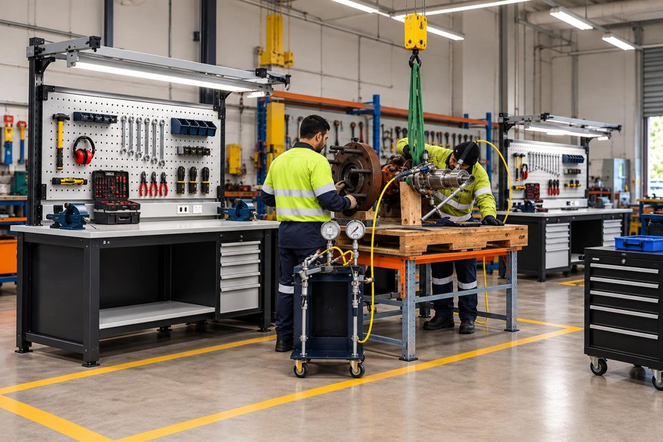
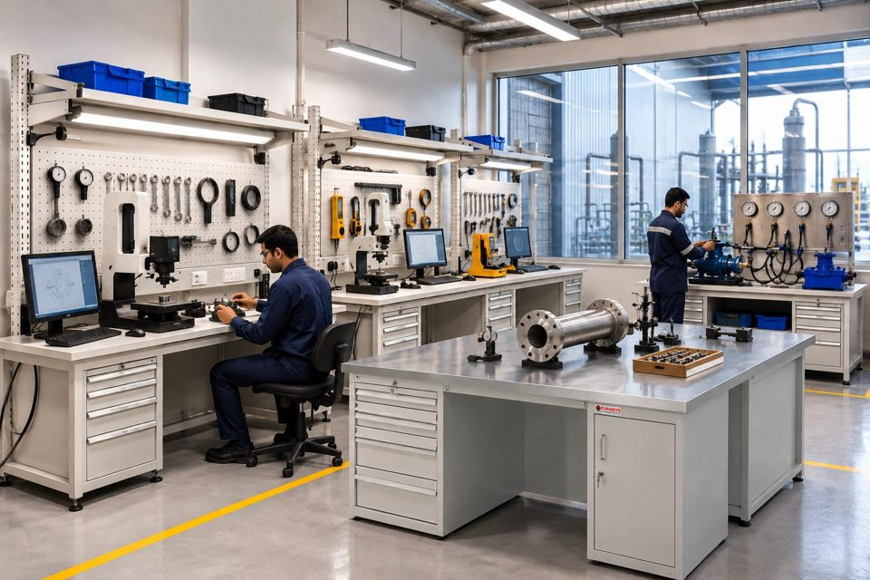
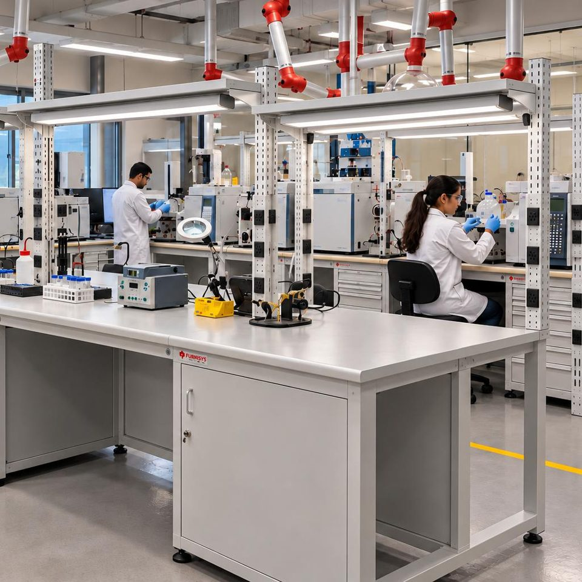
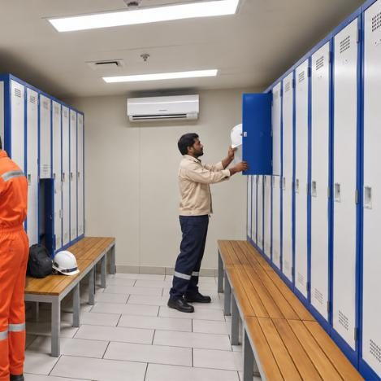
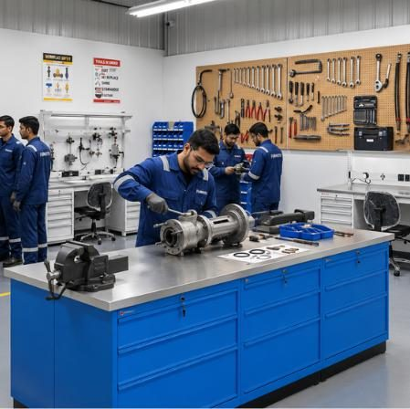
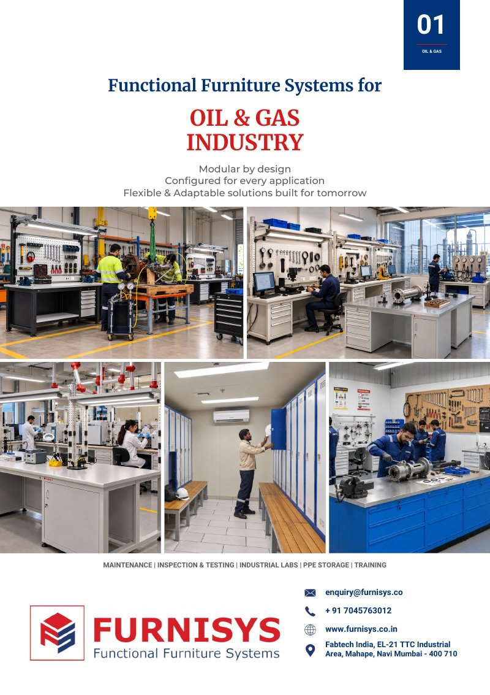

Oil & gas workspaces, built for demanding plant operations.
Oil and gas facilities span refineries, petrochemical plants, processing units and maintenance workshops. Their workspaces support continuous operations and disciplined handling of tools, components and materials, from heavy equipment servicing to inspection, analysis and training.

Sound familiar?
The everyday problems we hear most often from oil and gas teams.
Maintenance Workshop
Residue and metal debris make worktops difficult to keep clean.
Inspection & Testing Area
Inspected and pending components need clearly separate locations.
Industrial Labs & Analysis Area
Material testing and analytical work place different demands on benches.
Safety, PPE & Consumables Storage
PPE left on walls or in open bins is difficult to manage consistently.
5 application spaces. One configured system.
Choose a space to see the challenge, how we configure it and the systems involved.
Maintenance Workshop
Maintenance workshops support pump overhauls, valve servicing, motor repairs and general mechanical work in refineries and petrochemical plants. Equipment is dismantled, serviced and prepared for return to operation. Durable surfaces and organised tools help technicians manage repeated repair and rework tasks.
- Oil & GreaseResidue and metal debris make worktops difficult to keep clean.
- Tool Search TimeScattered tools interrupt servicing and add time to each job.
- Worktop DeteriorationUnsuitable surfaces wear under demanding daily maintenance tasks.
- Disorganised PartsLoose components and consumables disrupt repair and reassembly.
- Heavy-duty workbenches for maintenance
- GI or stainless steel tops selected for the task
- Mobile tool trolleys and pegboard panels
- Base cabinets and parts bin systems
- Organised maintenance tools
- Quicker tool retrieval
- Durable working surfaces
- Cleaner repair areas

Inspection & Testing Area
Inspection areas verify components and equipment before plant acceptance or return to service. Work includes dimensional checks, visual inspection, non-destructive testing, electronics testing and functional checks. Defined bench and storage zones help separate verification tasks from adjacent repair activities.
- Component Mix-UpsInspected and pending components need clearly separate locations.
- ContaminationResidue from neighbouring repair work can affect inspection areas.
- Instrument ClutterGauges and test instruments need organised, protected storage.
- Document ControlInspection records need an orderly place close to the test activity.
- Stable workbenches for inspection tasks
- Storage cabinets for instruments and gauges
- Mobile trolleys for component movement
- Segregation bins for pending and checked items
- Clear component segregation
- Organised test equipment
- Smoother verification flow
- Orderly inspection records

Industrial Labs & Analysis Area
Industrial laboratories support metallurgy, electronics testing, chemical analysis, corrosion evaluation and instrument calibration. Located within plants or specialist service facilities, these spaces need work surfaces and storage suited to their particular tasks, equipment and daily handling requirements.
- Varied Lab TasksMaterial testing and analytical work place different demands on benches.
- Worktop ExposureSpills and regular cleaning require appropriate surface selection.
- Sensitive ElectronicsElectronic testing requires suitable handling and workstation provision.
- Sample ManagementSamples, instruments and consumables need organised locations.
- Workbenches configured for analytical tasks
- SS or HPL worktops selected for the application
- Link Uprighter accessories and overhead cabinets
- Mobile trolleys with drawer storage
- Task-specific workspaces
- Organised samples and instruments
- Accessible lab resources
- Durable lab infrastructure

Safety, PPE & Consumables Storage
PPE and safety storage areas support workshop entrances, maintenance zones and plant safety stations. Personal protective equipment and consumables need defined locations and clear allocation. Lockers and cabinets help keep items organised, accessible and ready for issue when required.
- Informal StoragePPE left on walls or in open bins is difficult to manage consistently.
- Mixed ItemsSafety consumables and general tools need distinct storage zones.
- Unclear AllocationShared storage makes individual responsibility difficult to establish.
- Issue & ReturnItems without a defined home are harder to retrieve and return.
- Personal lockers for individual PPE allocation
- Internal hooks for suitable PPE storage
- Base cabinets for tools and consumables
- Lockable drawers for controlled storage
- Defined PPE locations
- Faster access at point of need
- Clear personal allocation
- Organised issue and return

Hydraulic & Pneumatic System Training Centre
Hands-on training centres support hose assembly, actuator servicing, cylinder operation, manifold connections and fault-finding demonstrations. Technicians learn through practical component work. Defined workstations, accessible tools and organised storage help instructors demonstrate each sequence clearly.
- Scattered ComponentsLoose fittings and demonstration parts interrupt the training sequence.
- Shared Maintenance ToolsResources used for live repairs may be unavailable during training.
- Unclear DemonstrationsPoor layouts make it harder for trainees to follow each task.
- Batch ChangeoversUnstructured storage slows clearing and resetting between sessions.
- Practical workbenches with durable tops
- Mobile cabinets for training tools and parts
- Base and storage wall cabinets
- Pegboard panels for frequently used tools
- Structured demonstrations
- Accessible tools and fittings
- Quicker batch changeovers
- Organised practical learning
Fundamentals of workspace design.
- Precision
- Electrical protection
- Traceability
- Tool control
- Ergonomics
- Repeatability
- Adaptability
The Furnisys workspace ecosystem.
Work systems, storage systems and accessories designed to work as one.
Work systems

Stands & Trolleys
Configure stands and trolleys to securely hold or transport parts, tools, and test equipment—ideal for use across production, assembly, repair, and maintenance environments.

Overhead Cabinets Shelves and Mounting Components
Keep essential items within reach and your worktop organized with overhead storage solutions. Cabinets can be wall-mounted or fixed onto riser shelves, while adjustable…
Storage systems

Base Storage Cabinet
"Modular, high-capacity storage built to handle heavy loads" adapts to changing workspaces and demanding storage needs.

Mobile Cabinets
Designed for workflows that require tools and parts on the move, Furnisys mobile cabinets combine storage and mobility in one solution

Storage Cabinets
Furnisys storage cabinet range is designed to achieve complete organization of parts , tools and equipment. Our extensive range of cabinet footprints & drawer heights…
Proof from real installations.

Weatherford Case Study
In the oil industry, particularly in oil equipment and services, research and development (R&D) play a critical role in ensuring that products and processes are reliable…

A Training Workstation Configured for Flame Arrester & Breather Valve Assembly
The client manufactures flame arresters, valves, and tank equipment, including equipment for cryogenic storage tanks, hydrogen applications, and lightning protection.…

Transforming R&D Labs in the Oil & Gas Industry with Modular Workstations
Did you know? How a Newly Built Lab Setup Was Streamlined with Configurable Workbenches Across Testing Zones
Trusted by manufacturers, laboratories and institutions across industries. See our clientele
Frequently asked questions.
Can one system cover every oil and gas space?
Yes. Work systems, storage systems and accessories share standard modules, so each space gets its own configuration within one consistent system.
Can the setup change as our operations grow?
Yes. Stations are built from standard parts, so you can add drawers, power, uprighters or bays, or relocate stations, without replacing what you already have.
Do you plan the layout before manufacturing?
For confirmed projects we carry out a site study and prepare 2D and 3D layouts and a proposal before anything is manufactured.
How we engage.
Share your brief
Scope, application spaces, timelines and any drawings.
Specialist discussion
A workspace specialist reviews the brief with your team.
Site study & layout
For confirmed projects: site study, 2D/3D layout and proposal.
Manufacture & install
Built in Navi Mumbai, installed and supported by our team.

Oil & Gas Industry Application Brochure
Every oil and gas space we configure for, with the systems, accessories and worktops used in each. Browse it as a flipbook or share it with your team.
Planning a new oil and gas space?
Share your project brief. Every brief is reviewed by a workspace specialist who will contact you to discuss scope, layout and next steps.
Application-led design
Every station configured around the process, not a catalogue.
One accountable team
Design, manufacturing and installation from Navi Mumbai.
Built to scale
Standard modules that grow with your operation.
Discuss your project
Tell us about the facility and the scope. A workspace specialist reviews every brief and contacts you to discuss next steps.
- A workspace specialist reviews every enquiry
- Matched to the right system and partner
- Share drawings or photos later, on call or email
See our latest oil and gas installations on LinkedIn
Follow Furnisys Oil & Natural Gas for new projects, application ideas and workspace insights from the oil and gas industry.